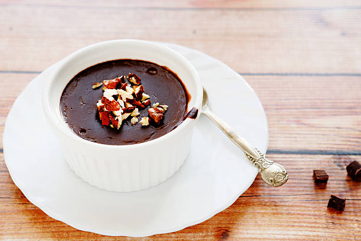

Ev Yapımı Kakaolu Puding Tarifi
Malzemeler
- 1 Litre Süt
- 1 Su Bardağı Toz Şeker
- 3 Yemek Kaşığı Kakao
- 2 Dolu Yemek Kaşığı Un
- 2 DOlu Yemek Kaşığı Nişasta
- 1 Paket Vanilya
- 1 Yemek Kaşığı Tereyağ
Yapılışı
-
Uygun bir tencereye, vanilya ve tereyağı hariç puding için gerekli
olan diğer malzemeleri alalım.
-
Orta ateşte, bir çırpma teli yardımıyla devamlı karıştırarak pişirmeye
başlayalım.
-
Kıvam alıp, göz göz olmaya başlayınca birkaç dakika daha karıştırarak
pişirelim.
-
Ateşten aldığımız pudingin içine vanilya ve tereyağı ilavesini
yaparak, mikserle bir kaç dakika çırpalım. Burada tel çırpıcı da
kullanabilirsiniz ancak mikser ile kıvamı daha güzel olacaktır.
-
Hazır olan pudingi kepçe yardımı ile kaselere aktaralım. Ben
kullandığım kaseler ile 4 kase elde ettim.
-
Oda sıcaklığına gelen pudingimizi buzdolabına kaldırarak bir kaç saat
dinlenmeye bırakalım.
-
Güzelce dinlenen ve soğuyan pudinglerimizi dilediğimiz gibi süsleyerek
servis edelim. Afiyet olsun.
Kaynak için Tıklayınız